Elektronik
Vorsätze der Einheiten
Um Zahlen leichter schreiben zu können, gibt es Abkürzungen in verschiedenen Varianten.
Hier ist eine Tabelle mit den wichtigsten Abkürzungen:
Besonders bei der Angabe von Byte, zum Beispiel Megabyte (MB), gibt es auch noch IEC-Präfixe zur Basis 2.
Diese Vorsätze haben ein kleines "i" nach dem großen Buchstaben und sind vorallem in der IT besonders wichtig, weil diese Abkürzungen 2 hoch x sind (2 ist in der IT immer wichtig wegen True oder False...).
An dieser Stelle will ich darauf aufmerksam machen, dass man hier aufpassen muss, dass man das nicht verwechselt.
In einigen Bücher werden immer noch falsche Abkürzungen, Wörter oder Begriffe verwendet - viele wissen gar nicht, das es eigene IEC-Präfixe zur Basis 2 gibt!
Ein Beispiel zur Verdeutlichung: Bei Speicherkapazitäten kann es immer nur 2 hoch x Byte geben. Aus diesem Grund kann ein Speicher eigentlich niemals 512 MB haben, weil dies 488,28125 MiB entspricht, was keine Potenz von 2 ist!
Richtig wäre die Angabe: 512 MiB, was im Umkehrschluss ca. 537 MB entspricht.
| Name | Zeichen | Faktor |
|---|---|---|
| Exa | E | 1018 |
| Peta | P | 1015 |
| Tera | T | 1012 |
| Giga | G | 109 |
| Mega | M | 106 |
| Kilo | k | 103 |
| Hekto | h | 102 |
| Deka | da | 101 |
| - | - | 100 |
| Dezi | d | 10-1 |
| Zenti | c | 10-2 |
| Milli | m | 10-3 |
| Mikro | µ | 10-6 |
| Nano | n | 10-9 |
| Piko | p | 10-12 |
| Femto | f | 10-15 |
| Atto | a | 10-18 |
| Name | Zeichen | Faktor |
|---|---|---|
| Kibi | Ki | 210 |
| Mibi | Mi | 220 |
| Gibi | Gi | 230 |
| Tebi | Ti | 240 |
| Pebi | Pi | 250 |
| Exbi | Ei | 260 |
| Zebi | Zi | 270 |
| Yobi | Yi | 280 |
Ein Beispiel zur Verdeutlichung: Bei Speicherkapazitäten kann es immer nur 2 hoch x Byte geben. Aus diesem Grund kann ein Speicher eigentlich niemals 512 MB haben, weil dies 488,28125 MiB entspricht, was keine Potenz von 2 ist!
Richtig wäre die Angabe: 512 MiB, was im Umkehrschluss ca. 537 MB entspricht.
Ohm'sches Gesetz
Ohm'sches Gesetz
Das Ohm'sche Gesetz ist in der Elektronik eines der wichtigsten Gesetze bzw. eine der wichtigsten Formelen überhaupt.
Diese Formel kommt in jeder Schaltung vor.
U = R * I
U: Spannung, Einheit: V (Volt)
R: Widerstand, Einheit: Ω (Ohm)
I: Stromstärke, Einheit: A (Ampere)
R: Widerstand, Einheit: Ω (Ohm)
I: Stromstärke, Einheit: A (Ampere)
Ähnliche physikalische Gesetze
Ein weiteres wichtiges physikalisches und elektrotechnisches Gesetz bzw. Formel ist die Berechnung von der Leistung P (Einheit W, Watt).
Damit kann man sich die Leistung in Schaltungen ausrechnen.
P = U * I = R * I2
P: Leistung, Einheit: W (Watt)
Des Weiteren kann man sich die Arbeit W (Einheit: J, Joule) ausrechnen:
W = P * t = U * I * t = R * I2 * t = F * s = U * Q
W: Arbeit, Einheit: J (Joule)
F: Kraft, Einheit: N (Newton)
Q: Ladung, Einheit: C (Coulomb)
F: Kraft, Einheit: N (Newton)
Q: Ladung, Einheit: C (Coulomb)
Kirchhoffsche Gesetze
Die Kirchhoffschen Gesetze eignen sich ideal zum Berechnen von Spannungen oder Stromstärken in einem Stromkreis mit Seriell- und Parallelschaltungen.
Knotenregel
Die Knotenregel besagt, dass alle Ströme, die in einen Knoten fließen auch wieder aus dem Knoten fließen müssen.
 In diesem Fall würde die Formel so lauten:
In diesem Fall würde die Formel so lauten:

In diesem Fall würde die Formel so lauten:
I1 + I2 - I3 - I4 = 0
Allgemein formuliert sieht die Formel wie folgt aus:
N: Anzahl der Leiter im Knotenpunkt
Maschenregel
Die Maschenregel besagt, dass alle Spannungen, die in einer Art Kreis zusammenhängen, insgesamt 0 ergeben müssen.
 In diesem Fall würde die Formel so lauten:
In diesem Fall würde die Formel so lauten:

In diesem Fall würde die Formel so lauten:
-U1 - U2 + U3 - U4 + U5 = 0
Allgemein formuliert sieht die Formel wie folgt aus:
Strom- & Spannungsteiler
Mithilfe der Strom- & Spannungsteiler kann man fehlende Stromstärken oder Spannungen berechnen.
Stromteiler
Der Stromteiler lässt sich in parallelen Schaltungen anwenden.
 In dieser Schaltung gelten folgende Formeln:
In dieser Schaltung gelten folgende Formeln:
In dieser Schaltung gelten folgende Formeln:
I1 / I2 = R2 / R1
I2 / I3 = R3 / R2
I1 / I = R1 || 2 || 3 / R1
Spannungsteiler
Der Spannungsteiler lässt sich in seriellen Schaltungen anwenden.
 In dieser Schaltung gelten folgende Formeln:
In dieser Schaltung gelten folgende Formeln:
In dieser Schaltung gelten folgende Formeln:
U1 / U2 = R1 / R2
U1 / U = R1 / R123
Tiefpass
 Beim Tiefpass gelten folgende Formeln:
Beim Tiefpass gelten folgende Formeln:
UC = U * (1 - e-(t / τ))
U = UC * e-(t / τ)
τ = R * C
τ: Tau (Zeitkonstante)
Wechselspannung
Plattenkondensator
Ein Kondensator entsteht entweder gewollt oder ungewollt.
Wenn man absichtlich etwas aufladen will, ist der Kondensator gewollt.
Wenn jedoch zwei Kabel nebeneinander liegen und einen Kondensator bilden, dann ist das ungewollt, weil man eigentlich keinen Kondensator haben will (aus diesem Grund müssen Kabel geschrimt werden).
 Beim Plattenkondensator gelten folgende Formeln:
Beim Plattenkondensator gelten folgende Formeln:
Beim Plattenkondensator gelten folgende Formeln:
E = U / d
ε = ε0 * εr
Q = C * U
C = (ε * A) / d
A: Fläche, Einheit: m2 (Quadratmeter)
E: elektrisches Feld, Einheit: V/m (Volt pro Meter)
d: Abstand, Einheit: m (Meter)
ε: Dielektrikum (elektrische Feldkonstante), Einheit: F/m (Kraft pro Meter)
Q: Ladung, Einheit: C (Coulomb)
C: Kapazität, Einheit: F (Kraft)
Die elektrische Feldkonstante des Vakuums ist exakt 1. Daran kann man sich orientieren (jedes Material hat eine andere Konstante).
E: elektrisches Feld, Einheit: V/m (Volt pro Meter)
d: Abstand, Einheit: m (Meter)
ε: Dielektrikum (elektrische Feldkonstante), Einheit: F/m (Kraft pro Meter)
Q: Ladung, Einheit: C (Coulomb)
C: Kapazität, Einheit: F (Kraft)
Transistor
Verstärker
Invertierende Verstärker
Theorie
Der invertierende Verstärker ist so aufgebaut, dass V immer negativ ist und deshalb Ua das verstärkte gespiegelte Ue ist.
Somit eignet sich der invertierende Verstärker ideal als Filter, weil man kleine Signale wegfiltert.
Aufbau

Formeln
V = Ua / Ue
V = - R2 / R1
Nicht-Invertierende Verstärker
Theorie
Der nicht-invertierende Verstärker verstärkt Ue wie der Name schon sagt ohne Minus beim V.
Das bedeuted, dass die Eingangsspannung nur verstärkt, nicht gespiegelt wird.
Aufbau

Formeln
V = Ua / Ue
V = (U1 + U2) / U2
V = (R1 + R2) / R2
Summierende Verstärker
Theorie
Der Summierer nimmt die Summe der Produkte von den Eingangsspannungen multipliziert mit der Verstärkung der jeweiligen Eingangsspannung.
Aufbau

Formeln
Ua = V1 * U1 + V2 * U2 + V3 * U3
V1 = - Ra / R1
V2 = - Ra / R2
V3 = - Ra / R3
Differenzverstärker
Theorie
Der Differenzverstärker verstärkt die Differenz zwischen Ue1 und Ue2.
Wenn in der Formel Ue1 minus Ue2 steht, ist damit gemeint, dass immer das größere Ue minus dem kleineren Ue genommen wird, damit das Ergebnis nicht negativ ist.
Aufbau

Formeln
V = R2 / R1
V = R4 / R3
Ua = (Ue1 - Ue2) * V
Integrator
Theorie
Der Integrator ist wie der invertierende Verstärker, aber mit dem Unterschied, dass statt dem Rückkopplungswiderstand ein Kondensator eingebaut ist.
Dieser bewirkt, dass die gesamte Schaltung frequenzabhängig wird. Mit steigender Frequenz nimmt die Ausgangsspannung ab.
Der Integrator zeigt sein Tiefpassverhalten.
Aufbau

Formel
ΔUa = - (Ue / τ) * Δt
Bodediagramm
Theorie
Das Bodediagramm zeigt die Dezibel in Bezug zur Frequenz vom OPV und der Schaltung.
Dabei sind die Dezibel in 20er Schritten und die Frequenz logarithmisch skaliert.
Pro Frequenzdecade nehmen die Schaltungen 20db ab, wenn sie größer als fg sind.
Zeichnung

Hardware
Serverhardware
RAID
Die Abkürzung RAID steht heutzutage für Redundant Array of Independent Disks (dt.: redundantes Array unabhängiger Festplatten) [früher: Redundant Array of Inexpensive Disks (dt.: redundantes Array günstiger Festplatten)].
RAID ist eine gängige Methode zum Schutz von Anwendungsdaten auf Festplatten und Solid-State-Speichern, wobei verschiedene RAID-Typen den Schutzgrad gegen den Preis ausbalancieren. Je größer der Schutz, desto höher die Kosten.
Mit der Weiterentwicklung der Datenspeicherung hat sich auch die Anzahl der RAID-Levels erhöht.
RAID ist eine Möglichkeit, einzelne physische Laufwerke zu einem RAID-Set zusammenzufassen (funktioniert auch mittels Software). Das RAID-Set stellt alle physischen Laufwerke als eine logische Festplatte auf einem Server dar. Die logische Festplatte wird als Logical Unit Number (LUN) bezeichnet.
RAID kann verschiedene Einheiten splitten. Damit ist gemeint, dass RAID entweder jedes Bit, jedes Byte oder ganze Blöcke von Bytes auf verschiedene Disks aufteilt.
RAID ist eine gängige Methode zum Schutz von Anwendungsdaten auf Festplatten und Solid-State-Speichern, wobei verschiedene RAID-Typen den Schutzgrad gegen den Preis ausbalancieren. Je größer der Schutz, desto höher die Kosten.
Mit der Weiterentwicklung der Datenspeicherung hat sich auch die Anzahl der RAID-Levels erhöht.
RAID ist eine Möglichkeit, einzelne physische Laufwerke zu einem RAID-Set zusammenzufassen (funktioniert auch mittels Software). Das RAID-Set stellt alle physischen Laufwerke als eine logische Festplatte auf einem Server dar. Die logische Festplatte wird als Logical Unit Number (LUN) bezeichnet.
RAID kann verschiedene Einheiten splitten. Damit ist gemeint, dass RAID entweder jedes Bit, jedes Byte oder ganze Blöcke von Bytes auf verschiedene Disks aufteilt.
Software- / Hardware-RAID
Beim Software-RAID besitzt das RAID-System keinen eigenen Controller sondern nutzt nur die CPU des Rechners.
Dies hat den Nachteil, dass kein eigener Cache für das RAID-System bereitgestellt werden kann.
Würde diese Software das RAID-System nicht organisieren, sähe man auf dem Rechner einfach mehrere Partitionen der Festplatten.
Hardware-RAID ist dann das Gegenteil. Beim Hardware-RAID gibt es einen eigenen Controller, der das RAID-System managed und auch einen eigenen Cache hat. Dies hat den Vorteil, dass die CPU des Rechners nicht so ausgelastet ist.
Hardware-RAID ist dann das Gegenteil. Beim Hardware-RAID gibt es einen eigenen Controller, der das RAID-System managed und auch einen eigenen Cache hat. Dies hat den Vorteil, dass die CPU des Rechners nicht so ausgelastet ist.
verschiedene RAIDs
Überblick
RAID-Level können in drei Kategorien unterteilt werden: Standard, Nicht-Standard und verschachtelt (nested).
Standard-RAID-Level bestehen aus den grundlegenden RAID-Typen mit den Nummern 0 bis 6.
Ein Nicht-Standard-RAID-Level ist auf die Standards eines bestimmten Unternehmens oder Open-Source-Projekts festgelegt. Nicht-Standard-RAID umfasst RAID 7, adaptives RAID, RAID S und Linux md RAID 10.
Verschachteltes RAID bezieht sich auf Kombinationen von RAID-Leveln, wie RAID 10 (RAID 1+0) und RAID 50 (RAID 5+0).
Standard-RAID-Level bestehen aus den grundlegenden RAID-Typen mit den Nummern 0 bis 6.
Ein Nicht-Standard-RAID-Level ist auf die Standards eines bestimmten Unternehmens oder Open-Source-Projekts festgelegt. Nicht-Standard-RAID umfasst RAID 7, adaptives RAID, RAID S und Linux md RAID 10.
Verschachteltes RAID bezieht sich auf Kombinationen von RAID-Leveln, wie RAID 10 (RAID 1+0) und RAID 50 (RAID 5+0).
RAID 0: Festplatten-Striping
Dieses RAID teilt die Daten 1:1 auf zwei Platten auf.
Somit bietet RAID 0 zwar einen schnelleren Datenzugriff, jedoch keine weitere Datenredundanz oder Fehlertoleranz (Parität).
Wenn eine Platte ausfällt, kann man auf keine Daten mehr zugreifen.
Somit bietet RAID 0 zwar einen schnelleren Datenzugriff, jedoch keine weitere Datenredundanz oder Fehlertoleranz (Parität).
Wenn eine Platte ausfällt, kann man auf keine Daten mehr zugreifen.
RAID 1: Disk Mirroring
Dieses RAID kopiert die Daten 1:1 auf zwei Disks.
Somit bietet RAID 1 zwar Datensicherheit und eine schnelle Lesegeschwindigkeit, jedoch keine schnellere Schreibgeschwindigkeit.
Wenn eine Platte ausfällt, kann man immer noch auf die zweite Platte zugreifen (Failover-Fähigkeit). 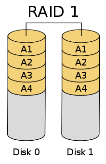
Somit bietet RAID 1 zwar Datensicherheit und eine schnelle Lesegeschwindigkeit, jedoch keine schnellere Schreibgeschwindigkeit.
Wenn eine Platte ausfällt, kann man immer noch auf die zweite Platte zugreifen (Failover-Fähigkeit). 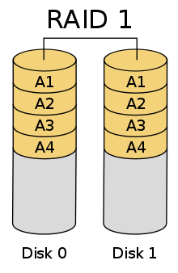
{kind=link}
RAID 2: Striping und Hamming-Code-Parität
(veraltet)
Dieses RAID strippt die Daten auf Bit-Ebene und verwendet den Hamming-Code, um Parität zu bieten und Fehler zu erkennen.
Die Parität liefert eine Prüfsumme über die auf die Festplatten geschriebenen Daten. Die Paritätsinformationen werden zusammen mit den Originaldaten geschrieben. Der Server, der auf die Daten eines hardwarebasierten RAID-Sets zugreift, weiß nie, wenn eines der Laufwerke im RAID-Set defekt ist. Wenn das passiert, verwendet der Controller die Paritätsinformationen, die auf den weiterhin funktionierenden Festplatten im RAID-Satz gespeichert sind, um die verlorenen Daten wiederherzustellen.
Somit bietet RAID 2 Datensicherheit (Prüfbits) und Parität (Hamming-Code), sprich Datenredundanz und Fehlertoleranz. Allerdings ist RAID 2 komplexer und kostspieliger, weil es ein zusätzliches Laufwerk erfordert.
Wenn eine Platte ausfällt, kann man mithilfe der Prüfbits die Daten wieder herstellen. 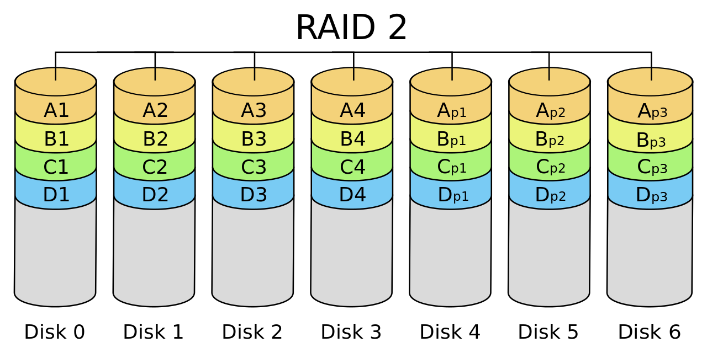
Dieses RAID strippt die Daten auf Bit-Ebene und verwendet den Hamming-Code, um Parität zu bieten und Fehler zu erkennen.
Die Parität liefert eine Prüfsumme über die auf die Festplatten geschriebenen Daten. Die Paritätsinformationen werden zusammen mit den Originaldaten geschrieben. Der Server, der auf die Daten eines hardwarebasierten RAID-Sets zugreift, weiß nie, wenn eines der Laufwerke im RAID-Set defekt ist. Wenn das passiert, verwendet der Controller die Paritätsinformationen, die auf den weiterhin funktionierenden Festplatten im RAID-Satz gespeichert sind, um die verlorenen Daten wiederherzustellen.
Somit bietet RAID 2 Datensicherheit (Prüfbits) und Parität (Hamming-Code), sprich Datenredundanz und Fehlertoleranz. Allerdings ist RAID 2 komplexer und kostspieliger, weil es ein zusätzliches Laufwerk erfordert.
Wenn eine Platte ausfällt, kann man mithilfe der Prüfbits die Daten wieder herstellen. 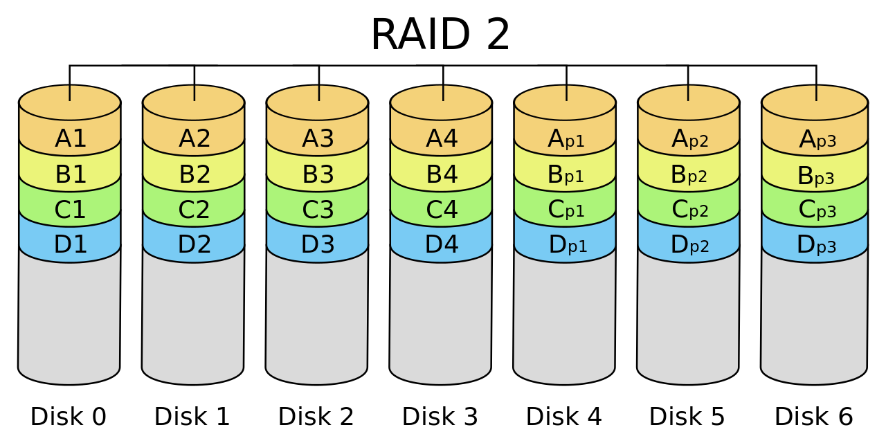
{kind=link}
RAID 3: Paritätsfestplatte
(veraltet)
RAID 3 verwendet eine Paritätsfestplatte, um die von einem RAID-Controller erzeugten Paritätsinformationen auf einer separaten Festplatte von den eigentlichen Datenfestplatten zu speichern, anstatt sie mit den Daten zu stripen, wie bei RAID 5. RAID 3 erfordert mindestens drei physische Festplatten.
Somit bietet RAID 3 einen hohen Datendurchsatz und ist daher eine gute Wahl für die Übertragung großer Datenmengen. Allerdings erfordert RAID 3 ein zusätzliches Laufwerk für die Parität. Da die Paritätsdaten auf einem separaten Laufwerk gespeichert werden, ist die Leistung von RAID 3 schlecht, wenn viele kleine Datenanforderungen vorliegen, wie bei einer Datenbankanwendung.
Wenn eine Platte ausfällt, kann man mithilfe der Prüfbits die Daten wieder herstellen. 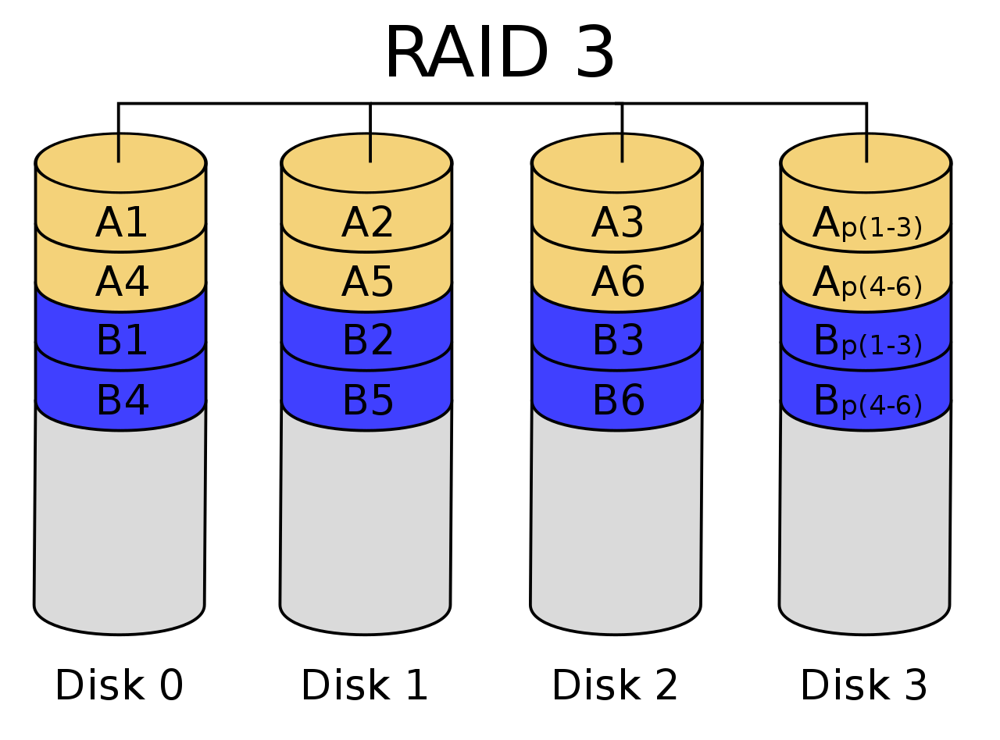
RAID 3 verwendet eine Paritätsfestplatte, um die von einem RAID-Controller erzeugten Paritätsinformationen auf einer separaten Festplatte von den eigentlichen Datenfestplatten zu speichern, anstatt sie mit den Daten zu stripen, wie bei RAID 5. RAID 3 erfordert mindestens drei physische Festplatten.
Somit bietet RAID 3 einen hohen Datendurchsatz und ist daher eine gute Wahl für die Übertragung großer Datenmengen. Allerdings erfordert RAID 3 ein zusätzliches Laufwerk für die Parität. Da die Paritätsdaten auf einem separaten Laufwerk gespeichert werden, ist die Leistung von RAID 3 schlecht, wenn viele kleine Datenanforderungen vorliegen, wie bei einer Datenbankanwendung.
Wenn eine Platte ausfällt, kann man mithilfe der Prüfbits die Daten wieder herstellen. 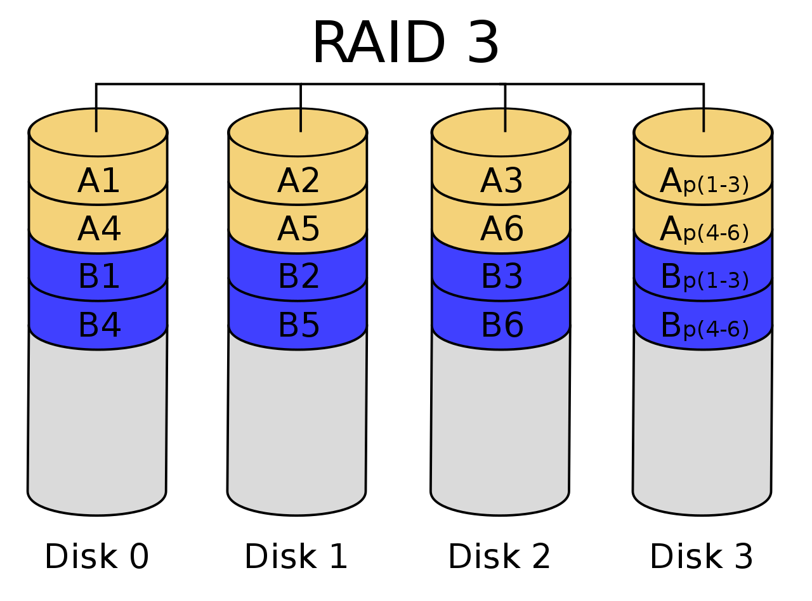
{kind=link}
RAID 4: Paritätsfestplatte und Block-Level-Striping
RAID 4 verwendet eine dedizierte Paritätsfestplatte zusammen mit Block-Level-Striping über Festplatten hinweg, um Daten zu schützen.
Bei RAID 4 wird die Anzahl der Bits auf mehreren Festplatten addiert und die Summe auf der separaten Paritätsfestplatte gespeichert.
Diese gespeicherten Bits werden zur Datenwiederherstellung verwendet, wenn eine Platte ausfällt.
Da inzwischen Alternativen wie RAID 5 verfügbar sind, wird RAID 4 nicht mehr häufig verwendet.
Striping ermöglicht das Lesen von Daten von jeder Festplatte. RAID 4 ist gut für sequentiellen Datenzugriff geeignet. Allerdings kann die Verwendung einer dedizierten Paritätsplatte zu Leistungsengpässen bei Schreibvorgängen führen, da alle Schreibvorgänge an die dedizierte Platte gehen müssen.
Wenn eine Platte ausfällt, kann man mithilfe der Prüfbits die Daten wieder herstellen. 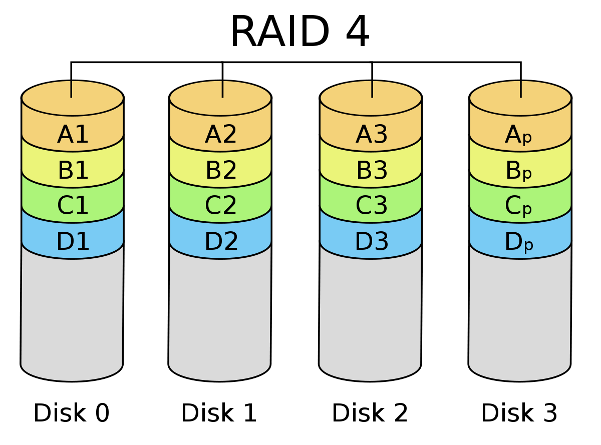
Striping ermöglicht das Lesen von Daten von jeder Festplatte. RAID 4 ist gut für sequentiellen Datenzugriff geeignet. Allerdings kann die Verwendung einer dedizierten Paritätsplatte zu Leistungsengpässen bei Schreibvorgängen führen, da alle Schreibvorgänge an die dedizierte Platte gehen müssen.
Wenn eine Platte ausfällt, kann man mithilfe der Prüfbits die Daten wieder herstellen. 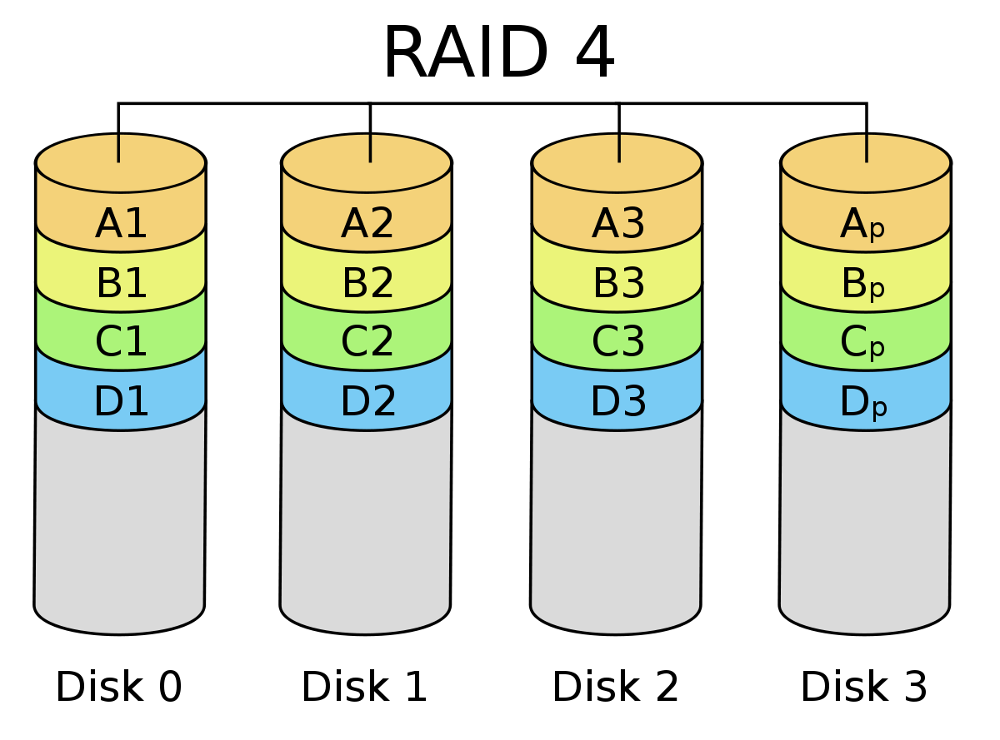
{kind=link}
RAID 5: Festplatten-Striping mit Parität
RAID 5 verwendet Festplatten-Striping mit Parität.
Wie bei anderen RAID-Leveln, die Striping verwenden, werden die Daten über alle Festplatten im RAID-Set verteilt.
Die Paritätsinformationen, die zur Rekonstruktion der Daten im Falle eines Festplattenausfalls benötigt werden, sind ebenfalls diagonal über die Festplatten im RAID-Set verteilt.
RAID 5 ist die gängigste RAID-Methode, da sie ein gutes Gleichgewicht zwischen Leistung und Verfügbarkeit erreicht.
RAID 5 erfordert mindestens drei physische Festplatten.
RAID 5 ist eine gute Option für Anwendungs- und Dateiserver mit einer begrenzten Anzahl von Laufwerken.
Die kombinierte Verwendung von Daten-Striping und Parität verhindert, dass eine einzelne Festplatte zu einem Engpass wird. RAID 5 bietet einen guten Durchsatz und eine Leistung, die der von RAID 0 entspricht. Da die Paritätsdaten über alle Festplatten im RAID-Satz verteilt sind, ist RAID 5 einer der sichersten RAID-Typen und bietet Datenredundanz und Zuverlässigkeit. RAID-5-Laufwerke können im laufenden Betrieb ausgetauscht werden, wodurch Ausfallzeiten vermieden werden.
Die Schreibleistung auf RAID-5-Laufwerken ist aufgrund der Paritätsdatenberechnung langsamer als die Leseleistung. Dieser RAID-Level leidet auch unter längeren Wiederherstellungszeiten und möglichem Datenverlust, wenn ein zweites Laufwerk während einer Wiederherstellung ausfällt. RAID 5 erfordert außerdem einen anspruchsvolleren Controller als andere RAID-Level.
Wenn eine Platte ausfällt, kann man mithilfe der Prüfbits die Daten wieder herstellen. 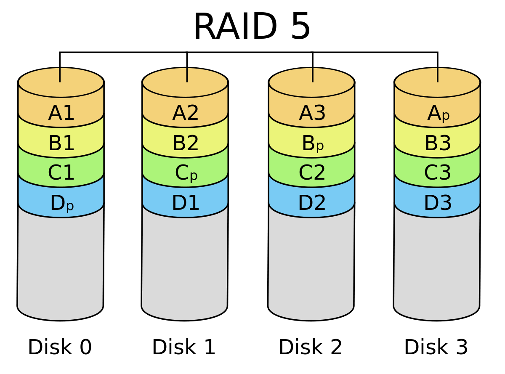
Die kombinierte Verwendung von Daten-Striping und Parität verhindert, dass eine einzelne Festplatte zu einem Engpass wird. RAID 5 bietet einen guten Durchsatz und eine Leistung, die der von RAID 0 entspricht. Da die Paritätsdaten über alle Festplatten im RAID-Satz verteilt sind, ist RAID 5 einer der sichersten RAID-Typen und bietet Datenredundanz und Zuverlässigkeit. RAID-5-Laufwerke können im laufenden Betrieb ausgetauscht werden, wodurch Ausfallzeiten vermieden werden.
Die Schreibleistung auf RAID-5-Laufwerken ist aufgrund der Paritätsdatenberechnung langsamer als die Leseleistung. Dieser RAID-Level leidet auch unter längeren Wiederherstellungszeiten und möglichem Datenverlust, wenn ein zweites Laufwerk während einer Wiederherstellung ausfällt. RAID 5 erfordert außerdem einen anspruchsvolleren Controller als andere RAID-Level.
Wenn eine Platte ausfällt, kann man mithilfe der Prüfbits die Daten wieder herstellen. 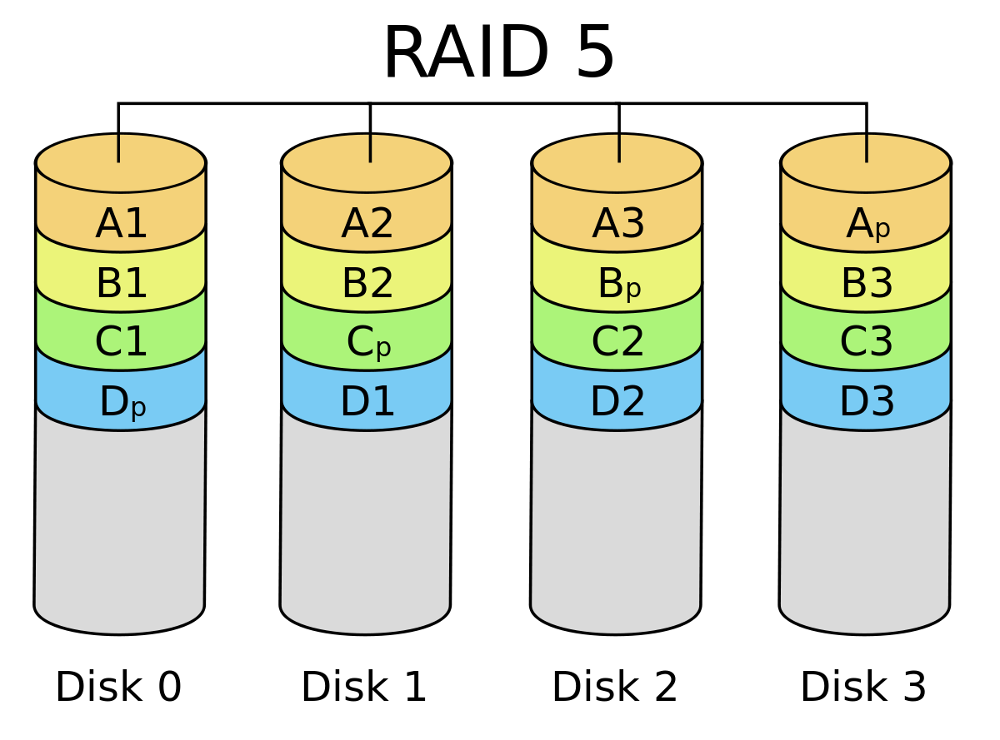
{kind=link}
RAID 6: Festplatten-Striping mit doppelter Parität
RAID 6 erhöht die Zuverlässigkeit, indem Daten auf mehrere Festplatten verteilt werden und E/A-Operationen sich überlappen können, um die Leistung zu verbessern.
RAID 6 verwendet zwei Paritäts-Stripes, die zwei Festplattenausfälle innerhalb des RAID-Sets zulassen, bevor Daten verloren gehen.
RAID 6 ermöglicht die Datenwiederherstellung bei gleichzeitigen Laufwerksausfällen, was bei Laufwerken mit größerer Kapazität und längeren Wiederherstellungszeiten häufiger vorkommt.
RAID 6 erfordert mindestens vier Laufwerke.
Die doppelte Parität bei RAID 6 schützt vor Datenverlusten, wenn ein zweites Laufwerk ausfällt. Der prozentuale Anteil der nutzbaren Datenspeicherkapazität steigt mit dem Hinzufügen von Festplatten zu einem RAID-6-Array. Jenseits des Minimums von vier Festplatten verbraucht RAID 6 weniger Speicherkapazität als RAID-Level, die Spiegelung verwenden.
RAID 6 hat eine geringere Leistung als RAID 5. Die Leistung kann erheblich beeinträchtigt werden, wenn zwei Festplatten gleichzeitig wiederhergestellt werden müssen. RAID 6 kann teurer sein, da es zwei zusätzliche Festplatten für die Parität benötigt. RAID 6 erfordert einen speziellen Controller, und RAID-Controller-Coprozessoren werden oft mit RAID 6 verwendet, um Paritätsberechnungen durchzuführen und die Schreibleistung zu verbessern.
RAID 6 ist eine gute Option für die langfristige Datenspeicherung. Es wird häufig für Laufwerke mit großer Kapazität verwendet, die für die Archivierung oder plattenbasierte Datensicherung eingesetzt werden. Mit mehr Datenschutzfunktionen als RAID 5 ist RAID 6 auch eine gute Wahl für unternehmenskritische Anwendungen.
Wenn zwei Platten ausfallen, kann man mithilfe der Prüfbits die Daten wieder herstellen. 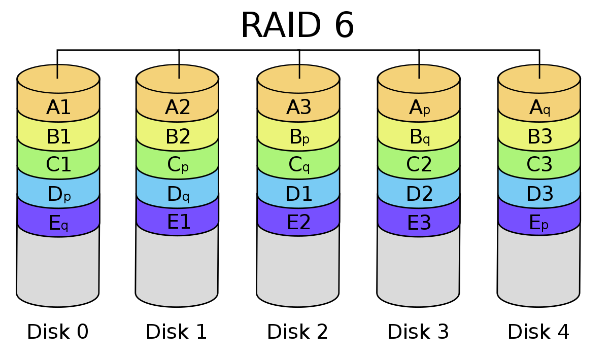
Die doppelte Parität bei RAID 6 schützt vor Datenverlusten, wenn ein zweites Laufwerk ausfällt. Der prozentuale Anteil der nutzbaren Datenspeicherkapazität steigt mit dem Hinzufügen von Festplatten zu einem RAID-6-Array. Jenseits des Minimums von vier Festplatten verbraucht RAID 6 weniger Speicherkapazität als RAID-Level, die Spiegelung verwenden.
RAID 6 hat eine geringere Leistung als RAID 5. Die Leistung kann erheblich beeinträchtigt werden, wenn zwei Festplatten gleichzeitig wiederhergestellt werden müssen. RAID 6 kann teurer sein, da es zwei zusätzliche Festplatten für die Parität benötigt. RAID 6 erfordert einen speziellen Controller, und RAID-Controller-Coprozessoren werden oft mit RAID 6 verwendet, um Paritätsberechnungen durchzuführen und die Schreibleistung zu verbessern.
RAID 6 ist eine gute Option für die langfristige Datenspeicherung. Es wird häufig für Laufwerke mit großer Kapazität verwendet, die für die Archivierung oder plattenbasierte Datensicherung eingesetzt werden. Mit mehr Datenschutzfunktionen als RAID 5 ist RAID 6 auch eine gute Wahl für unternehmenskritische Anwendungen.
Wenn zwei Platten ausfallen, kann man mithilfe der Prüfbits die Daten wieder herstellen. 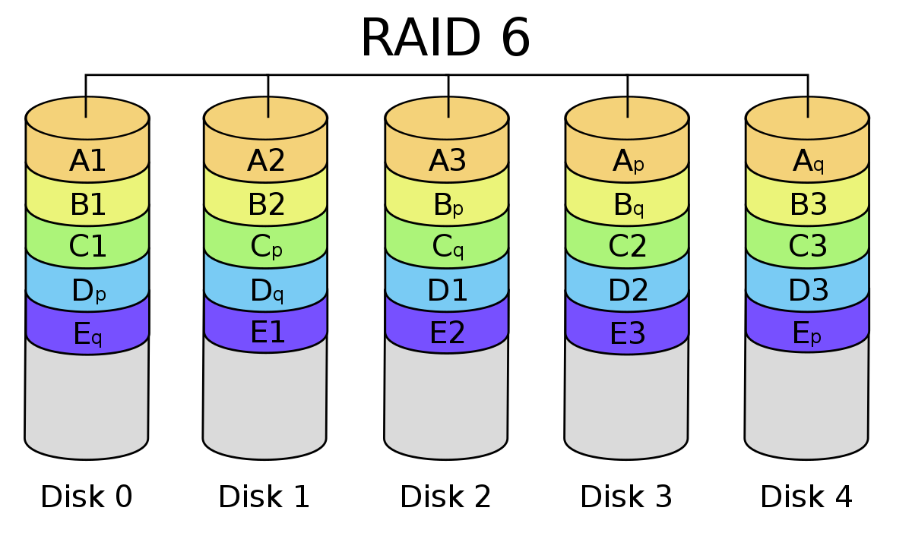
{kind=link}
RAID 7: Paritätsfestplatte und Caching
(Nicht-Standard)
Dieses RAID ist eine Kombination aus RAID 3 und RAID 4 und zusätzlich wird auch noch Caching hinzugefügt, welches proprietäre Hardware erfordert.
Aus diesem Grund wird RAID 7 nicht verwendet.
Dieses RAID ist eine Kombination aus RAID 3 und RAID 4 und zusätzlich wird auch noch Caching hinzugefügt, welches proprietäre Hardware erfordert.
Aus diesem Grund wird RAID 7 nicht verwendet.
RAID 10: Festplattenspiegelung und Striping
RAID 10, das auch als RAID 1+0 bezeichnet wird, ist ein verschachtelter RAID-Level, der Festplattenspiegelung und Striping kombiniert.
Die Daten werden normalerweise zuerst gespiegelt und dann gestriped. Die Spiegelung von Striped-Sets erfüllt die gleiche Aufgabe, ist aber weniger fehlertolerant als Striping-Spiegelsets.
RAID 1+0 erfordert mindestens vier physische Festplatten.
RAID 10 profitiert von den Leistungsmöglichkeiten, die durch die Verwendung von RAID 0 bereitgestellt werden. Die Daten werden auf zwei oder mehr Laufwerke verteilt, und mehrere Lese-/Schreibköpfe auf den Laufwerken können gleichzeitig auf Teile der Daten zugreifen, was zu einer schnelleren Verarbeitung führt. Da es RAID 1 verwendet, sind die Daten von RAID 10 vollständig geschützt. Wenn das ursprüngliche Laufwerk ausfällt oder nicht verfügbar ist, kann die Spiegelkopie die Daten übernehmen.
Wenn Sie ein Laufwerk in einem Stripe-Set verlieren, müssen Sie auf Daten aus dem anderen Stripe-Set zugreifen, da Stripe-Sets keine Parität haben. Bei der Verwendung von RAID 1 werden die Daten bei RAID 10 vollständig dupliziert, wodurch sich die erforderliche Speicherkapazität verdoppelt. Da mindestens vier Festplatten erforderlich sind, ist RAID 10 teurer als andere RAID-Level.
Die Redundanz und hohe Leistung von RAID 10 machen es zu einer guten Wahl für Vorgänge, die minimale Ausfallzeiten erfordern. Es ist auch optimal für E/A-intensive Anwendungen, wie E-Mail, Webserver, Datenbanken und Anwendungen, die eine hohe Festplattenleistung benötigen.
Wenn eine Platte ausfällt, kann man mithilfe der Prüfbits die Daten wieder herstellen. 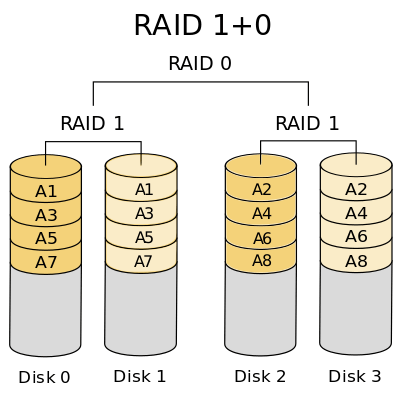
RAID 10 profitiert von den Leistungsmöglichkeiten, die durch die Verwendung von RAID 0 bereitgestellt werden. Die Daten werden auf zwei oder mehr Laufwerke verteilt, und mehrere Lese-/Schreibköpfe auf den Laufwerken können gleichzeitig auf Teile der Daten zugreifen, was zu einer schnelleren Verarbeitung führt. Da es RAID 1 verwendet, sind die Daten von RAID 10 vollständig geschützt. Wenn das ursprüngliche Laufwerk ausfällt oder nicht verfügbar ist, kann die Spiegelkopie die Daten übernehmen.
Wenn Sie ein Laufwerk in einem Stripe-Set verlieren, müssen Sie auf Daten aus dem anderen Stripe-Set zugreifen, da Stripe-Sets keine Parität haben. Bei der Verwendung von RAID 1 werden die Daten bei RAID 10 vollständig dupliziert, wodurch sich die erforderliche Speicherkapazität verdoppelt. Da mindestens vier Festplatten erforderlich sind, ist RAID 10 teurer als andere RAID-Level.
Die Redundanz und hohe Leistung von RAID 10 machen es zu einer guten Wahl für Vorgänge, die minimale Ausfallzeiten erfordern. Es ist auch optimal für E/A-intensive Anwendungen, wie E-Mail, Webserver, Datenbanken und Anwendungen, die eine hohe Festplattenleistung benötigen.
Wenn eine Platte ausfällt, kann man mithilfe der Prüfbits die Daten wieder herstellen. 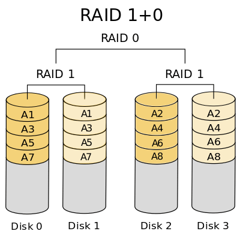
{kind=link}
RAID 50: Festplatten-Striping und verteilte Parität
RAID 50, auch bekannt als RAID 5+0, ist ein weiterer verschachtelter RAID-Level, der Striping und verteilte Parität kombiniert, um die Vorteile von beiden zu nutzen.
RAID 50 hat eine Mindestanforderung von sechs Festplatten.
RAID 50 bietet eine schnellere Schreibleistung als RAID 5. Seine Datenschutzfunktionen sind ebenfalls eine Stufe über RAID 5, und die Wiederherstellungszeit ist schneller. Im Falle eines Festplattenausfalls wird die Leistung nicht so stark beeinträchtigt wie bei RAID 5, da nur eines der RAID-5-Arrays betroffen ist.
Da RAID 50 sechs Festplatten benötigt, ist es potenziell teurer als andere RAID-Typen. Und wie RAID 5 benötigt es auch einen anspruchsvolleren Controller und synchronisierte Festplatten.
RAID 50 eignet sich gut für Anwendungen, die eine hohe Zuverlässigkeit erfordern, und für solche, die mit hohen Datenübertragungsraten und -anforderungen zurechtkommen müssen.
Wenn eine Platte ausfällt, kann man mithilfe der Prüfbits die Daten wieder herstellen. 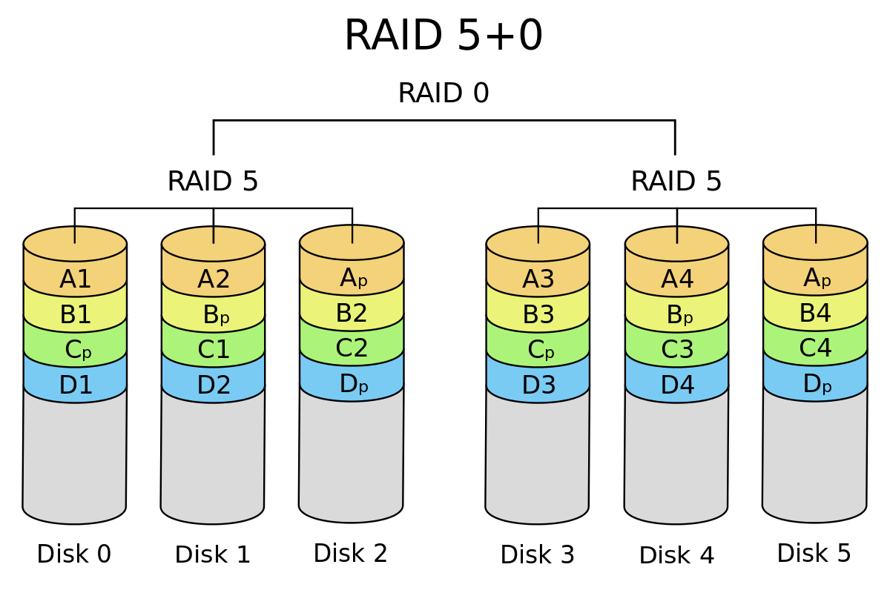
RAID 50 bietet eine schnellere Schreibleistung als RAID 5. Seine Datenschutzfunktionen sind ebenfalls eine Stufe über RAID 5, und die Wiederherstellungszeit ist schneller. Im Falle eines Festplattenausfalls wird die Leistung nicht so stark beeinträchtigt wie bei RAID 5, da nur eines der RAID-5-Arrays betroffen ist.
Da RAID 50 sechs Festplatten benötigt, ist es potenziell teurer als andere RAID-Typen. Und wie RAID 5 benötigt es auch einen anspruchsvolleren Controller und synchronisierte Festplatten.
RAID 50 eignet sich gut für Anwendungen, die eine hohe Zuverlässigkeit erfordern, und für solche, die mit hohen Datenübertragungsraten und -anforderungen zurechtkommen müssen.
Wenn eine Platte ausfällt, kann man mithilfe der Prüfbits die Daten wieder herstellen. 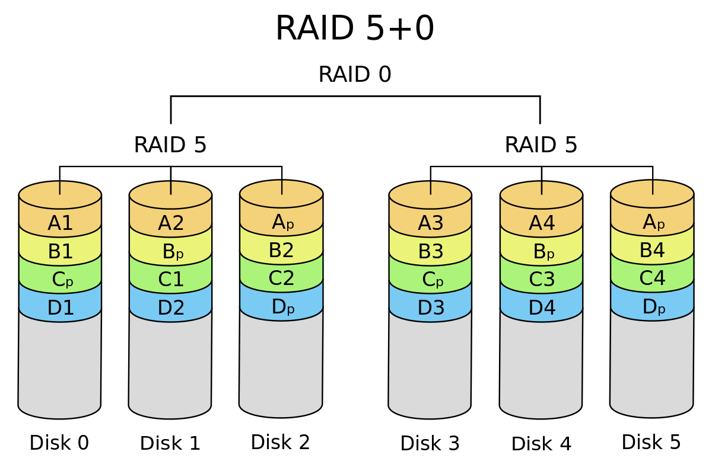
{kind=link}
Adaptives RAID: Option zur Verwendung von RAID 3 oder RAID 5
(Nicht-Standard)
Adaptives RAID lässt den RAID-Controller herausfinden, wie die Parität auf den Festplatten gespeichert werden soll. Er wählt zwischen RAID 3 und RAID 5, je nachdem, welcher RAID-Settyp bei der Art der Daten, die auf die Festplatten geschrieben werden, besser funktioniert.
Adaptives RAID lässt den RAID-Controller herausfinden, wie die Parität auf den Festplatten gespeichert werden soll. Er wählt zwischen RAID 3 und RAID 5, je nachdem, welcher RAID-Settyp bei der Art der Daten, die auf die Festplatten geschrieben werden, besser funktioniert.
Ausfallsicherheit
Ausfallsicherheit ist ein wichtiges Thema, wenn es allgemein um IT geht.
Spezifisch bei Serverhardware gesehen, spielt dieses Thema vorallem eine wichtige Rolle, weil ansonsten gewisse Dienste nicht mehr zur Verfügung gestellt werden können oder Daten verloren gehen könnten.
Stromversorgung
Server benötigen eine durchgehende Stromversorgung, damit die Technik auch funktioniert.
Was kann man machen, falls nun der Strom ausfällt oder ein Netzteil kaputt geht?
Um den Ausfall eines Netzteils vorzubeugen, verwendet man mehrere Netzteile, die im besten Fall auch noch an verschiedenen Stromnetzen hänge, falls ein Netzwerk ausfällt, dass immer noch genügend Strom vom anderen oder den anderen Netzwerk(en) vorhanden ist.
Für den Fall, dass der gesamte Strom in einem Gebiet zum Beispiel einem Stadtviertel ausfällt, jedoch weiterhin Strom gebraucht wird (z.B.: Krankenhaus), verwendet man eine USV (Unterbrechungsfreie Stromversorgung). Das ist sozusagen ein Akku, der sich selbst aktiviert, sobald der Strom ausfällt. Dieser kann mithilfe eines sich durchgehend drehendem, mit Strom betriebenem Gewicht (ähnlich wie ein Ventilator) erzielt werden, das für ein gesamtes Gebäude für ca. 1 Minute Strom liefern kann, währendessen ein Notstromaggregat hochfährt und anschließend für mehrere Stunden, wenn nicht sogar Tage Strom liefern kann.
Um den Ausfall eines Netzteils vorzubeugen, verwendet man mehrere Netzteile, die im besten Fall auch noch an verschiedenen Stromnetzen hänge, falls ein Netzwerk ausfällt, dass immer noch genügend Strom vom anderen oder den anderen Netzwerk(en) vorhanden ist.
Für den Fall, dass der gesamte Strom in einem Gebiet zum Beispiel einem Stadtviertel ausfällt, jedoch weiterhin Strom gebraucht wird (z.B.: Krankenhaus), verwendet man eine USV (Unterbrechungsfreie Stromversorgung). Das ist sozusagen ein Akku, der sich selbst aktiviert, sobald der Strom ausfällt. Dieser kann mithilfe eines sich durchgehend drehendem, mit Strom betriebenem Gewicht (ähnlich wie ein Ventilator) erzielt werden, das für ein gesamtes Gebäude für ca. 1 Minute Strom liefern kann, währendessen ein Notstromaggregat hochfährt und anschließend für mehrere Stunden, wenn nicht sogar Tage Strom liefern kann.
Netzwerkkarten
Durch den Einsatz von mehreren Netzwerkkarten, die gleichzeitig arbeiten, kann man die Datenübertragung verbessern.
Diese Methode nennt sich Bonding.
Andere Methoden zur Gewährleistung der Ausfallsicherheit sind Festplattencontroller und Schnittstellenkarten für Speichernetzwerke.
Schnittstellen
Übersicht
In der folgenden Tabelle sind die meisten Schnittstellen-Datenraten (theoretische Datenrate: unter den Idealbedingungen; praktische Datenrate: möglicherweise weniger wegen Temperatur, Störungen etc.).
| Schnittstelle | theoretische Datenrate | praktische Datenrate | |
|---|---|---|---|
| ATA | IDE (ATA-1) PIO 0 | - | 3,33 MiByte/s |
| IDE (ATA-1) PIO 1 | - | 5,22 MiByte/s | |
| IDE (ATA-1) PIO 2 | - | 8,33 MiByte/s | |
| IDE Multiword-DMA 0 | - | 4,16 MiByte/s | |
| IDE Multiword-DMA 1 | - | 13,33 MiByte/s | |
| IDE Multiword-DMA 2 | - | 16,66 MiByte/s | |
| E-IDE (Fast ATA-2) PIO 3 | - | 11,11 MiByte/s | |
| E-IDE (Fast ATA-2) PIO 4 | - | 16,66 MiByte/s | |
| Ultra-DMA 0 (ATA-16 / ATA-3) | - | 16,66 MiByte/s | |
| Ultra-DMA 1 (ATA-25) | - | 25,0 MiByte/s | |
| Ultra-DMA 2 (ATA-33 / ATA-4) | - | 33,33 MiByte/s | |
| Ultra-DMA 3 (ATA-44) | - | 44,4 MiByte/s | |
| Ultra-DMA 4 (Ultra-ATA-66 / ATA-5) | - | 66,66 MiByte/s | |
| Ultra-DMA 5 (Ultra-ATA-100 / ATA-6) | - | 99,99 MiByte/s | |
| Ultra-DMA 6 (Ultra-ATA-133 / ATA-7) | - | 133 MiByte/s | |
| SATA | Serial-ATA | 1,5 GiBit/s | 150 MiByte/s |
| Serial-ATA-2 | 3 GiBit/s | 300 MiByte/s | |
| Serial-ATA-3 | 6 GiBit/s | 600 MiByte/s | |
| eSATA | 7,5 GiBit/s | 750 MiByte/s | |
| SCSI | SCSI-1 (asynchron) | 0,5 GiBit/s | 5 MiByte/s |
| SCSI-2: Fast-SCSI | 1 GiBit/s | 10 MiByte/s | |
| SCSI-2: Wide-SCSI | 1 GiBit/s | 10 MiByte/s | |
| SCSI-2: Fast-Wide-SCSI | 2 GiBit/s | 20 MiByte/s | |
| SCSI-3: Ultra-SCSI | 2 GiBit/s | 20 MiByte/s | |
| Ultra-SCSI Differential (HVD) | 2 GiBit/s | 20 MiByte/s | |
| SCSI-3: Ultra-Wide-SCSI | 4 GiBit/s | 40 MiByte/s | |
| Ultra-Wide-SCSI Differential (HVD) | 4 GiBit/s | 40 MiByte/s | |
| Ultra-2-SCSI (LVD) | 4 GiBit/s | 40 MiByte/s | |
| Ultra-2-Wide-SCSI (LVD) | 8 GiBit/s | 80 MiByte/s | |
| Ultra-160-SCSI (Ultra-3-SCSI) | 16 GiBit/s | 160 MiByte/s | |
| Ultra-320-SCSI | 32 GiBit/s | 320 MiByte/s | |
| SAS | Serial Attached SCSI (SAS) | 3 GiBit/s | 300 MiByte/s |
| Serial Attached SCSI 2 (SAS 2) | 6 GiBit/s | 600 MiByte/s | |
| Serial Attached SCSI 3 (SAS 3) | 12 GiBit/s | 1.200 MiByte/s | |
| Serial Attached SCSI 4 (SAS 4) | 24 GiBit/s | 2.400 MiByte/s | |
| USB | USB 1.0/1.1 (LowSpeed) | 1,5 MiBit/s | 130 kByte/s |
| USB 1.0/1.1 (FullSpeed) | 12 MiBit/s | 1 MiByte/s | |
| USB 2.0 (HighSpeed) | 480 MiBit/s | 40 MiByte/s | |
| USB 3.0 (Gen 1) | 5 GiBit/s | 450 MiByte/s | |
| USB 3.1 (Gen 2) | 10 GiBit/s | 800 MiByte/s | |
| USB 3.2 (Gen 2x2) | 20 GiBit/s | 2 GiByte/s | |
| USB4 (Gen 3x2) | 40 GiBit/s | 4 GiByte/s | |
| Gigabit Ethernet | 1,25 GiBit/s | 125 MiByte/s | |
| FireWire | FireWire 400 | 500 MiBit/s | 50 MiByte/s |
| FireWire 800 | 1 GiBit/s | 100 MiByte/s | |
| DP | DisplayPort 1.1 | 8,64 GiBit/s | 86,4 MiByte/s |
| DisplayPort 1.2 | 17,28 GiBit/s | 172,8 MiByte/s | |
| DisplayPort 1.3 | 25,92 GiBit/s | 259,2 MiByte/s | |
| Fibre Channel | 1 GiBit/s | ||
| 2 GiBit/s | |||
| 4 GiBit/s | |||
| 8 GiBit/s | |||
| 10 GiBit/s | |||
| 16 GiBit/s | |||
IDE
IDE ist die Abkürzung für Integrated Drive Electronics (dt.: integrierte Entwicklungsumgebung).
Andere Name für diese Schnittstelle sind ATA (Advanced Technology Attachment) oder PATA (Parallel Advanced Technology Attachment).
Diese Schnittstelle war eine der ersten und somit auch die langsamste Schnittstelle.
Damals dachte man, parallel könnte man eine höhere Bandbreite erhalten, also mehr Daten pro Sekunde übertragen, jedoch stören sich die Magnetfelder der beiden nebeneinander liegenden Kabel gegenseitig, sodass die Bandbreite niedriger ist, als bei einer seriellen Schnittstelle.
Insgesamt erreicht IDE in der Praxis 133 MiB/s.
Dabei ist die Anzahl der Controller auf 2 beschränkt.
Mithilfe von Jumpern kann man den Slave und den Master konfigurieren.
IDE hat einen 14-poligen Stecker.
Heutzutage wird ATA eher selten noch bei optischen Laufwerken verwendet.
SATA
SATA ist die serielle Variante von ATA, sprich Serial Advanced Technology Attachment.
Deswegen kann SATA auch viel höhere Übertragungsgeschwindigkeiten erreichen als ATA, bis zu 600 MiB/s in der Praxis.
Außerdem ist die serielle Übertragungsart höher übertaktbar, in diesem Fall bis zu 6GHz.
Heutzutage wird SATA als Standard-Schnittstelle verwendet, weil es eine gute Übertragungsgeschwindigkeit hat, jedoch nicht wirklich teuer ist.
Bei SATA hat das Stromkabel mehr Pins als das Datenkabel.
SCSI
SCSI ist die Abkürzung für Small Computer System Interface und die Weiterentwicklung von ATA.
Das soll heißen, SCSI ist deutlich schneller als ATA mit bis zu 320 MiB/s in der Praxis, allerdings genau wie ATA immer noch parallel.
SAS
SAS ist die Abkürzung für SASCSI, was wiederrum die Abkürzung für Serial Attached Small Computer System Interface.
Wie man sich vielleicht schon denken kann, ist SAS die serielle Variante von SCSI, somit kann man auch eine höhere Datenrate erreichen: 2.400 MiB/s.
Merken können Sie sich am besten diese einfach Zusammenfassung:
SAS = SATA + SCSI
SAS = SATA + SCSI
USB
{kind=link}
FC
FC hat verschiedene Bedeutungen (z.B.: neben der Schnittstelle auch ein Protokoll).
Im Sachzusammenhang steht die Abkürzung jedoch für Fibre Channel (auch das Protokoll heißt so (FCP)).
Dabei handelt es sich um die erste Schnittstelle, die auf Glasfaserkabel setzt.
FC ist eine serielle Schnittstelle.
FC erreicht eine Übertragungsgeschwindigkeit von